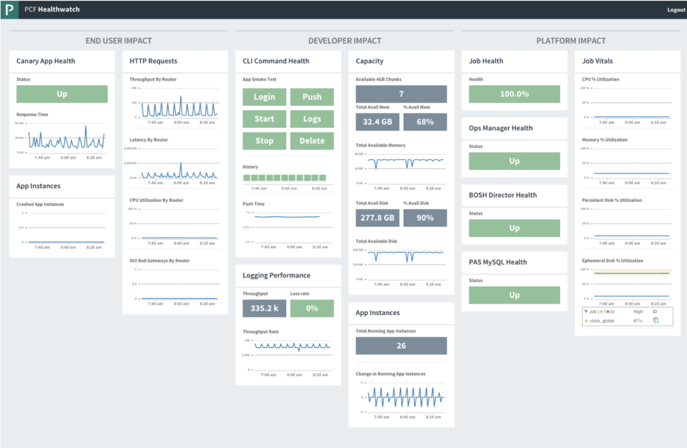
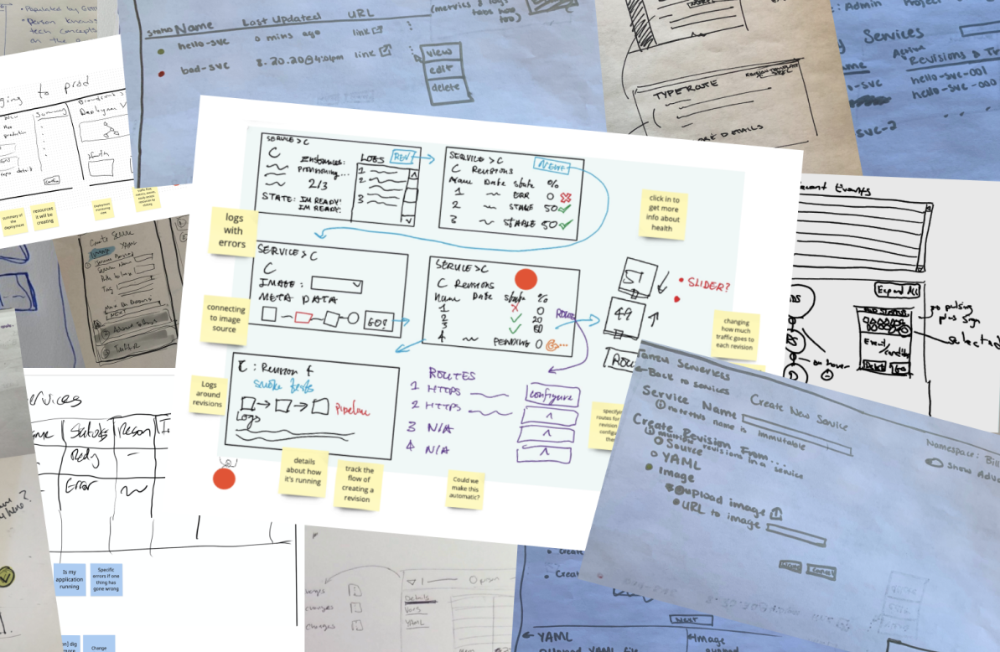
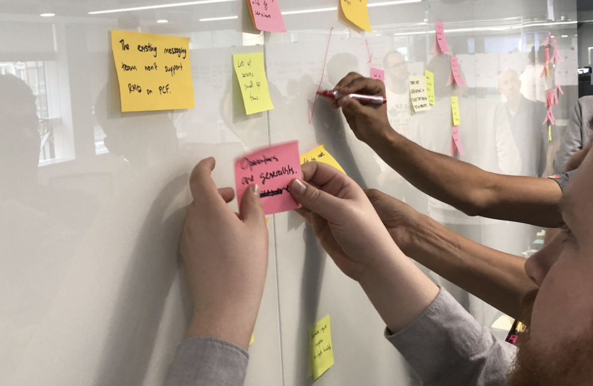
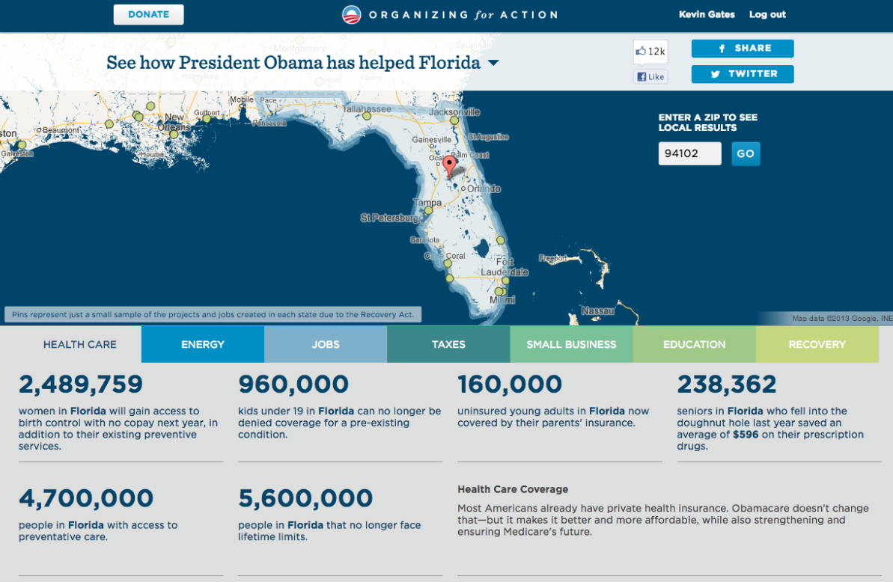

Kevin Gates
I'm a UX designer with extensive experience in enterprise SaaS and data products.
I've worn many hats. At Google, I was part of a three-person team that built the company's early business intelligence tools. For the Obama 2012 campaign, I designed an app that reached millions of voters. More recently, I've applied lean UX practices to cloud computing at Pivotal and global trade logistics at Flexport.
PROJECTS

Pivotal HealthWatch
I led design for HealthWatch, a data analytics product for monitoring cloud platforms. The project started as an unproven concept and went on to gain 100% adoption.

KNative UI
How I led a collaborative, engineer-centric design process to rethink the UI for KNative, an opinionated open-source developer tool.

Pivotal Developer Console
How I guided a product team through a large, complex problem space to reimagine developer tool access in the cloud.

Obama for America: Project Atlas
I led an all-volunteer tech team for the Obama 2012 campaign. For this project I took a big data set, a fuzzy concept and created an app that reached millions of voters.